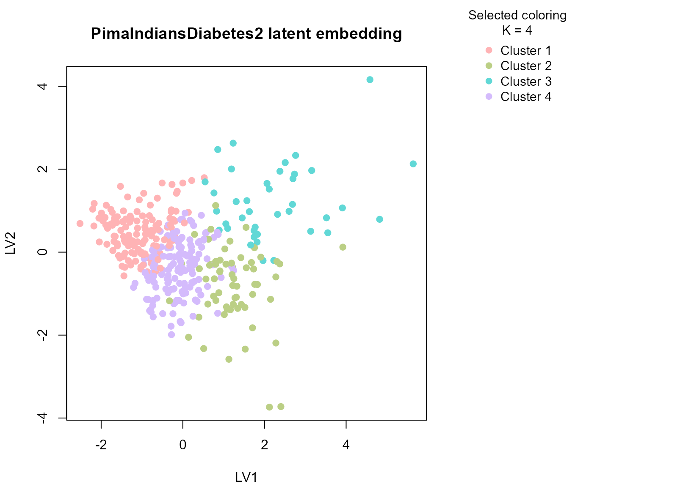
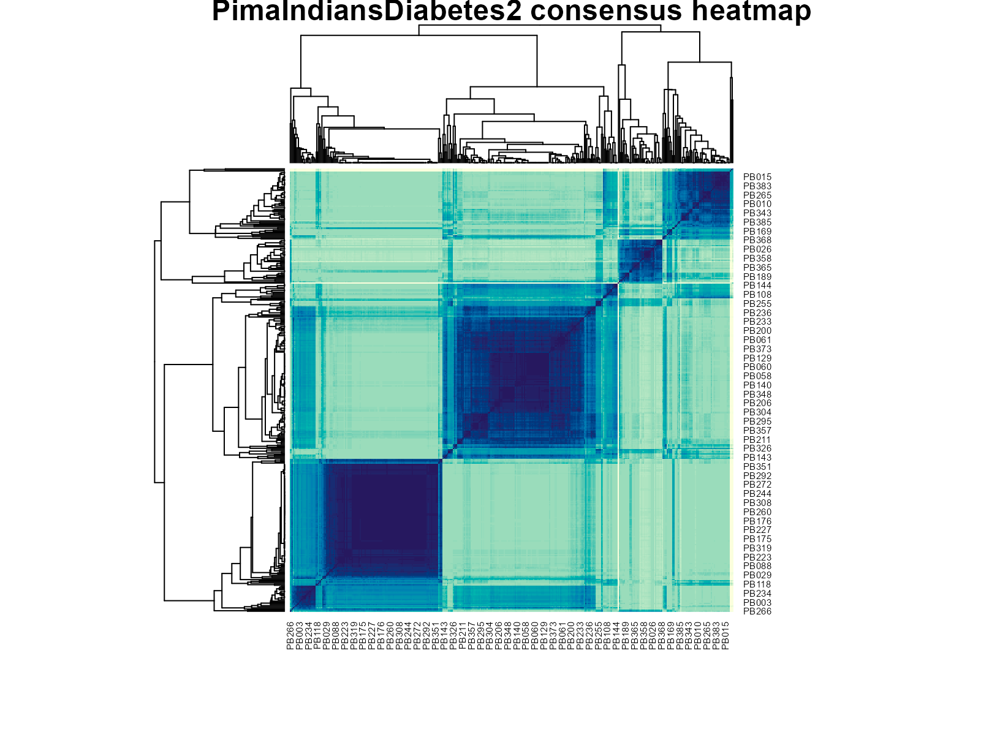

Background
PimaIndiansDiabetes2 is a well-known clinical dataset
containing laboratory and anthropometric measurements related to
diabetes risk. uccdf ships a derived dataframe called
pima_biomarker_panel that keeps the biomarker-style
measurements, age, an ordinal age band, and the observed diabetes status
for post hoc interpretation.
Objective
The objective is to determine whether these biomarker measurements support stable patient strata and whether the resulting groups correspond to clinically recognizable combinations of glycemic burden, adiposity, insulin levels, and age rather than to a single threshold on one variable.
Data preparation
data(pima_biomarker_panel)
analysis_pima <- pima_biomarker_panel[, c(
"sample_id", "glucose", "pressure", "triceps", "insulin", "mass", "pedigree", "age_band"
)]
head(analysis_pima)
#> sample_id glucose pressure triceps insulin mass pedigree age_band
#> 4 PB001 89 66 23 94 28.1 0.167 young
#> 5 PB002 137 40 35 168 43.1 2.288 mid
#> 7 PB003 78 50 32 88 31.0 0.248 young
#> 9 PB004 197 70 45 543 30.5 0.158 older
#> 14 PB005 189 60 23 846 30.1 0.398 older
#> 15 PB006 166 72 19 175 25.8 0.587 olderAnalysis
fit_pima <- fit_uccdf(
analysis_pima,
id_column = "sample_id",
candidate_k = 1:5,
n_resamples = 24,
n_null = 39,
row_fraction = 0.9,
col_fraction = 0.9,
seed = 124
)
fit_pima$selection
#> $alpha
#> [1] 0.05
#>
#> $global_p_value
#> [1] 0.025
#>
#> $null_family
#> [1] "independence_marginal_null"
#>
#> $detected_structure
#> [1] TRUE
#>
#> $best_exploratory_k
#> [1] 4
#>
#> $best_supported_k
#> [1] 4
select_k(fit_pima)
#> k stability null_mean null_sd stability_excess z_score p_value supported
#> 1 2 0.4002752 0.3657894 0.02700194 0.03448578 1.2771589 0.100 FALSE
#> 2 3 0.2272861 0.1575004 0.02304594 0.06978567 3.0281095 0.025 TRUE
#> 3 4 0.2066853 0.1327304 0.02150814 0.07395491 3.4384598 0.025 TRUE
#> 4 5 0.1631658 0.1418030 0.02221780 0.02136283 0.9615183 0.175 FALSE
#> objective
#> 1 1.1385295
#> 2 2.8083870
#> 3 3.1612009
#> 4 -0.3603693Results
pima_assign <- merge(augment(fit_pima), pima_biomarker_panel, by.x = "row_id", by.y = "sample_id", all.x = TRUE)
head(pima_assign)
#> row_id cluster confidence ambiguity exploratory_cluster
#> 1 PB001 1 0.9133449 0.08665507 1
#> 2 PB002 2 0.5314082 0.46859179 2
#> 3 PB003 1 0.7004041 0.29959594 1
#> 4 PB004 3 0.8739563 0.12604374 3
#> 5 PB005 3 0.8008191 0.19918090 3
#> 6 PB006 1 0.7446793 0.25532071 1
#> exploratory_confidence exploratory_ambiguity assignment_mode selected_k
#> 1 0.9133449 0.08665507 selected 4
#> 2 0.5314082 0.46859179 selected 4
#> 3 0.7004041 0.29959594 selected 4
#> 4 0.8739563 0.12604374 selected 4
#> 5 0.8008191 0.19918090 selected 4
#> 6 0.7446793 0.25532071 selected 4
#> exploratory_k glucose pressure triceps insulin mass pedigree age age_band
#> 1 4 89 66 23 94 28.1 0.167 21 young
#> 2 4 137 40 35 168 43.1 2.288 33 mid
#> 3 4 78 50 32 88 31.0 0.248 26 young
#> 4 4 197 70 45 543 30.5 0.158 53 older
#> 5 4 189 60 23 846 30.1 0.398 59 older
#> 6 4 166 72 19 175 25.8 0.587 51 older
#> diabetes
#> 1 neg
#> 2 pos
#> 3 pos
#> 4 pos
#> 5 pos
#> 6 pos
aggregate(
cbind(glucose, pressure, triceps, insulin, mass, pedigree, age, confidence) ~ cluster,
pima_assign,
function(x) round(mean(x, na.rm = TRUE), 2)
)
#> cluster glucose pressure triceps insulin mass pedigree age confidence
#> 1 1 104.46 64.68 19.84 97.12 26.74 0.50 26.73 0.87
#> 2 2 144.16 81.62 38.22 190.25 39.86 0.92 35.22 0.78
#> 3 3 161.23 70.36 32.26 428.46 35.41 0.48 35.33 0.83
#> 4 4 119.99 71.50 32.77 124.95 35.28 0.39 31.57 0.82
table(pima_assign$cluster, pima_assign$age_band)
#>
#> young mid older
#> 1 111 18 6
#> 2 24 26 13
#> 3 20 9 10
#> 4 93 47 15
table(pima_assign$cluster, pima_assign$diabetes)
#>
#> neg pos
#> 1 123 12
#> 2 19 44
#> 3 15 24
#> 4 105 50
round(prop.table(table(pima_assign$cluster, pima_assign$diabetes), margin = 1), 3)
#>
#> neg pos
#> 1 0.911 0.089
#> 2 0.302 0.698
#> 3 0.385 0.615
#> 4 0.677 0.323
plot_embedding(fit_pima, color_by = "selected", main = "PimaIndiansDiabetes2 latent embedding")
plot_consensus_heatmap(fit_pima, main = "PimaIndiansDiabetes2 consensus heatmap")
Discussion
The selected multi-cluster solution is useful because the table mixes several biomarker axes that do not collapse to one measurement. In a typical run, one cluster concentrates higher glucose and insulin burden, another has lower glycemic measurements with more moderate anthropometry, and additional groups capture intermediate or age-shifted profiles. The diabetes table is helpful here: it usually shows enrichment rather than perfect separation, which is what we would expect from a biomarker panel rather than a supervised classifier.
This is precisely where a typed consensus workflow helps. A single clustering run can overstate small differences in a moderately sized clinical table, while a stability-first summary gives a more defensible view of which patient strata are repeatedly supported by the data.
Interpretation
For PimaIndiansDiabetes2, the clusters should be
interpreted as stable biomarker profiles, not as diagnostic categories.
Their practical value is that they summarize recurring metabolic
patterns that can then be compared against the observed diabetes status,
age band, and individual biomarker distributions without turning the
clustering itself into a prediction model.